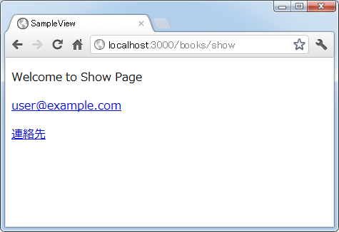
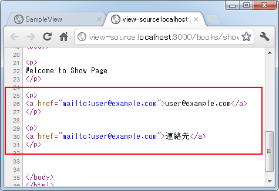
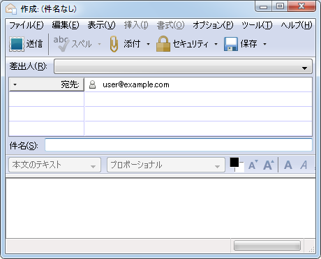
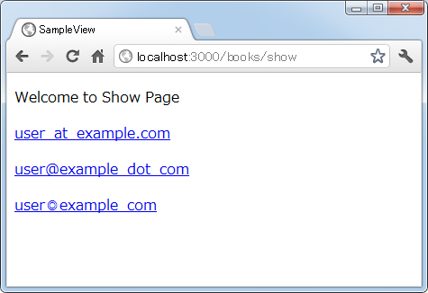
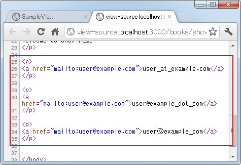
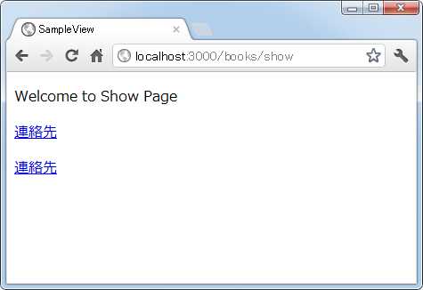
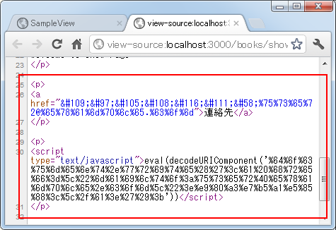
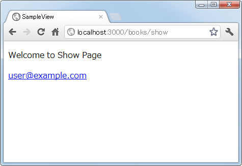
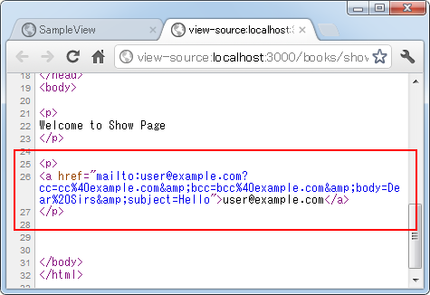
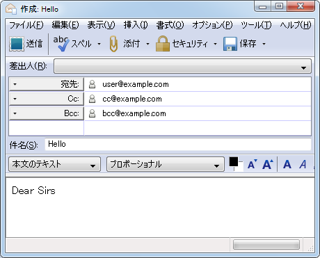

mail_toメソッドを使ったメールリンクの作成
テンプレートで「mailto:」を使った<a>タグを使ったリンクを作成する方法としてmail_toメソッドを使ってメールリンク用のタグを生成する方法について解説します。このリンクをクリックすると、利用者側でメールクライアントが起動し、設定されている宛先の情報が自動的に設定されます(送信はされません)。
※ 通常のリンクを作成する方法については「link_toメソッドを使ったリンクの作成」をご参照下さい。
1.mail_toメソッドの定義と基本的な使い方
2.アットマーク(＠)とドット(.)を別の文字で置き換える
3.メールアドレスのエンティティ化
4.Ccやメール本文などの設定
link_toメソッドの定義と基本的な使い方
mail_toメソッドはActionView::Helpers::UrlHelperクラスで次のように定義されています。
mail_to(email_address, name = nil, html_options = {})
1番目の引数はメールアドレスを指定します。この引数は必須です。2番目の引数はリンクを設定する文字列です。省略した場合(又はnilを指定した場合)は1番目に指定したメールアドレスが使用されます。
2番目の引数を省略： <%= mail_to 'user@example.com' %> --> <a href="mailto:user@example.com">user@example.com</a> 2番目の引数を指定： <%= mail_to 'user@example.com', '連絡先' %> --> <a href="mailto:user@example.com">連絡先</a>
では実際に簡単な例で確認してみます。「books」コントローラに「show」アクションを作成します。
class BooksController < ApplicationController def show end end
次に「books」コントロールの「show」アクションから呼び出されるテンプレートとして「app/views/books/show.html.erb」ファイルを作成し、次のように記述しました。
<p> Welcome to Show Page </p> <p> <%= mail_to 'user@example.com' %> </p> <p> <%= mail_to 'user@example.com', '連絡先' %> </p>
ルーティングの設定として「config/routes.rb」ファイルを次のように記述しました。
SampleView::Application.routes.draw do get "books/show" end
ではアプリケーションを起動し「books」コントロールの「show」アクションを呼び出してみます。すると次のように結果がブラウザに表示されました。

ソースを確認してみると次にように出力されていることが確認できます。

では画面に表示されている「連絡先」と書かれたリンクをクリックして下さい。ご利用されている環境によって異なりますが、次のようにメールクライアントが起動し「To」にメールアドレスが設定されています。

このようにmail_toメソッドを使うことでメールリンクを簡単に出力することができます。
アットマーク(＠)とドット(.)を別の文字で置き換える
連絡先のメールアドレスをそのまま掲載していると、残念ながらスパムメールなどが送信されてくる原因となります。その為、メールアドレスの中のアットマーク(＠)やドット(.)を別の文字で置き換えて表示することが行われます。
「replace_at」オプションと「replace_dot」オプションを使用することでアットマーク(＠)とドット(.)をそれぞれ指定した文字に置き換えることができます。
アットマーク(＠)を置き換え： <%= mail_to 'user@example.com', nil, :replace_at => '_at_' %> --> <a href="mailto:user@example.com">user_at_example.com</a> ドット(.)を置き換え： <%= mail_to 'user@example.com', nil, :replace_dot => '_dot_' %> --> <a href="mailto:user@example.com">user@example_dot_com</a>
変更されるのはあくまでリンクの対象として画面に表示されているメールアドレスだけです。
では実際に簡単な例で確認してみます。「show」アクションから呼び出されるテンプレートの「app/views/books/show.html.erb」ファイルを次のように変更しました。
<p> Welcome to Show Page </p> <p> <%= mail_to 'user@example.com', nil, :replace_at => '_at_' %> </p> <p> <%= mail_to 'user@example.com', nil, :replace_dot => '_dot_' %> </p> <p> <%= mail_to 'user@example.com', nil, :replace_at => '◎', :replace_dot => '_' %> </p>
ではアプリケーションを起動し「books」コントロールの「show」アクションを呼び出してみます。すると次のように結果がブラウザに表示されました。

1番目はアットマーク、2番目はドット、3番目はアットマークとドットの両方を別の文字に変更して表示しました。ソースを確認してみると次にように出力されていることが確認できます。

このようにリンクの対象として表示されるメールアドレスの中のアットマークやドットを自動的に変更して表示することができます。
メールアドレスのエンティティ化
スパムメール対策としてどれだけメールアドレスを隠そうとしても、実際にリンクをクリックすればメールリンクの仕組みを使っている以上はメールアドレスは表示されます。ただ画面に表示されているメールアドレスを変換することで、自動で収集されにくくすることはできます。さらにソースからも自動的に収集されにくくするためにエンティティ化と呼ばれる変換を行う手段が用意されています。
Railsでは文字を数値に置き換える方法とJavaScriptを使用する方法が用意されています。
文字を数値に置き換え：
<%= mail_to 'user@example.com', '連絡先', :encode => 'hex' %>
--> <a href="mailto:%75%73%65%72@%65%78%61%6d%70%6c%65.%63%6f%6d">連絡先</a>
JavaScriptを使用：
<%= mail_to 'user@example.com', '連絡先', :encode => 'javascript' %>
--> <script type="text/javascript">eval(decodeURIComponent('%64%6f%63%75%6d%65%6e%74%2e%77%72%69%74%65%28%27%3c%61%20%68%72%65%66%3d%5c%22%6d%61%69%6c%74%6f%3a%75%73%65%72%40%65%78%61%6d%70%6c%65%2e%63%6f%6d%5c%22%3e%e9%80%a3%e7%b5%a1%e5%85%88%3c%5c%2f%61%3e%27%29%3b'))</script>
どちらもmailtoという文字そのものも変換されていますので、リンク先にメールアドレスが設定されていることが分かりにくくなっています。
では実際に簡単な例で確認してみます。「show」アクションから呼び出されるテンプレートの「app/views/books/show.html.erb」ファイルを次のように変更しました。
<p> Welcome to Show Page </p> <p> <%= mail_to 'user@example.com', '連絡先', :encode => 'hex' %> </p> <p> <%= mail_to 'user@example.com', '連絡先', :encode => 'javascript' %> </p>
ではアプリケーションを起動し「books」コントロールの「show」アクションを呼び出してみます。すると次のように結果がブラウザに表示されました。

ソースを確認してみると次にように出力されていることが確認できます。

リンクをクリックした場合の挙動はエンティティ化する前と変わりません。1番目のリンク及び2番目のリンクをクリックするとどちらも次のようにメールクライアントが起動して「To」にメールアドレスが表示されます。
ただJavaScriptの方を使用する場合、利用者の方がお使いのブラウザでJavaScriptを有効にしていないとメールを送信することができませんので注意が必要です。
Ccやメール本文などの設定
ここまでは送信するメールの情報として、宛先である「To」の指定だけを行ってきましたが、他にも「cc」「bcc」「subject」「body」の指定が可能です。
<%= mail_to 'user@example.com', nil,
:cc => 'cc@example.com',
:bcc => 'bcc@example.com',
:subject => 'Hello',
:body => 'Dear Sirs' %>
--> <a href="mailto:user@example.com?cc=cc%40example.com&bcc=bcc%40example.com&body=Dear%20Sirs&subject=Hello">user@example.com</a>
各オプションを設定することで、リンクをクリックした時に自動的にメールに初期値が設定されます。
では実際に簡単な例で確認してみます。「show」アクションから呼び出されるテンプレートの「app/views/books/show.html.erb」ファイルを次のように変更しました。
<p>
Welcome to Show Page
</p>
<p>
<%= mail_to 'user@example.com', nil,
:cc => 'cc@example.com',
:bcc => 'bcc@example.com',
:subject => 'Hello',
:body => 'Dear Sirs' %>
</p>
ではアプリケーションを起動し「books」コントロールの「show」アクションを呼び出してみます。すると次のように結果がブラウザに表示されました。

ソースを確認してみると次にように出力されていることが確認できます。

リンクをクリックすると次のようにメールクライアントが起動して「To」の他に「Cc」「件名」「メール本文」に設定した値が表示されます。

件名やメール本文には日本語であっても問題ないようです。
( Written by Tatsuo Ikura )

著者 / TATSUO IKURA
初心者～中級者の方を対象としたプログラミング方法や開発環境の構築の解説を行うサイトの運営を行っています。